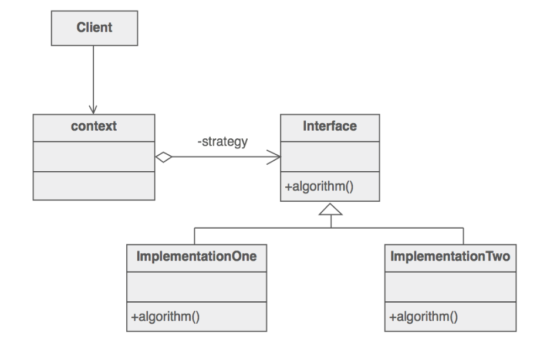

定义
策略模式定义了算法簇，分别封装起来，让它们之间可以互相替代，此模式让算法的变化独立于使用算法的客户
使用场景
- 针对同一类型问题的多种处理方式，仅仅是具体行为有差别时。
- 需要安全的封装多种同一类型的操作时。
- 出现同一抽象多个子类，而又需要使用if-else 或者 switch-case来选择时。
UML 图

- Context：用来操作策略的上下文环境。
- Strategy : 策略的抽象
- ImplementationOne、ImplementationTwo：具体策略的实现
简单实现
通常如果一个问题有多个解决方案或者稍有区别的操作时，最简单的方式就是利用if-else or switch-case方式来解决，对于简单的解决方案这样做无疑是比较简单、方便、快捷的，但是如果解决方案中包括大量的处理逻辑需要封装，或者处理方式变动较大的时候则就显得混乱、复杂，而策略模式则很好的解决了这样的问题，它将各种方案分离开来，让操作者根据具体的需求来动态的选择不同的策略方案。
步骤
- 定义Strategy接口
- 具体的算法 实现Strategy接口
- 客户端调用Strategy接口
例子
定义Strategy接口
package io.github.xuyushi.strategy;
/**
* Created by xuyushi on 16/2/17.
*/
public interface Strategy {
void doSomething();
}
具体的算法 实现
package io.github.xuyushi.strategy;
/**
* Created by xuyushi on 16/2/17.
*/
public class StrategyA implements Strategy {
@Override
public void doSomething() {
System.out.println("This is StrategyA");
}
}
package io.github.xuyushi.state;
/**
* Created by xuyushi on 16/1/29.
*/
public class StateB extends State {
@Override
public void next(Wrapper wrapper) {
wrapper.setState(new StateC());
}
@Override
public void pre(Wrapper wrapper) {
wrapper.setState(new StateA());
}
}
定义 context
package io.github.xuyushi.strategy;
/**
* Created by xuyushi on 16/2/17.
*/
public class Context {
private Strategy strategy;
public Context(Strategy strategy) {
this.strategy = strategy;
}
public void setStrategy(Strategy strategy) {
this.strategy = strategy;
}
public void doStrategy() {
strategy.doSomething();
}
}
客户端调用
package io.github.xuyushi.strategy;
/**
* Created by xuyushi on 16/2/17.
*/
public class strategyMain {
public static void main(String[] args) {
System.out.println("StateMain RUNNING");
// write your code here
Context context = new Context(new StrategyA());
context.doStrategy();
context.setStrategy(new StrategyB());
context.doStrategy();
}
}
结果
StateMain RUNNING
This is StrategyA
This is StrategyB
例子的 UML 图
总结
策略模式主要用来分离算法，根据相同的行为抽象来做不同的具体策略实现。
通过以上也可以看出策略模式的优缺点：
优点：
- 结构清晰明了、使用简单直观。
- 耦合度相对而言较低，扩展方便。
- 操作封装也更为彻底，数据更为安全。
缺点：
- 随着策略的增加，子类也会变得繁多。
参考
https://sourcemaking.com/design_patterns/strategy
https://github.com/simple-android-framework/android_design_patterns_analysis/tree/master/strategy/gkerison
『head first 设计模式』